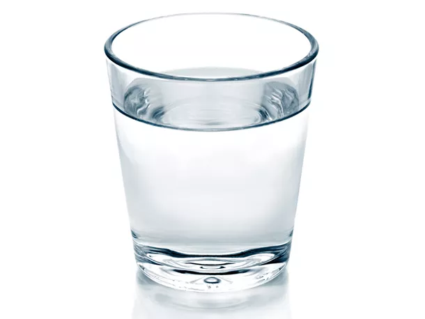

Water

Description
Water is a complicated recipe but bear with me
Ingredients
- 2 liters purified water
- 1.5g magnesium chloride
- 1g baking soda
- 1g calcium chloride
- Digital scale capable of 0.1g resolution
Instructions
- Combine 1 liter water, magnesium chloride, baking soda, and calcium chloride in a large bottle or jug and
stir to dissolve to form electrolyte solution.
- Add 10 grams of the electrolyte concentrate to remaining 1 liter of water to dilute. Serve or use for
cocktails. Remaining electrolyte solution can be stored in a sealed container for future dilution.
Credit:
https://www.seriouseats.com/the-best-tasting-water-hack-make-your-own-smartwater-recipe